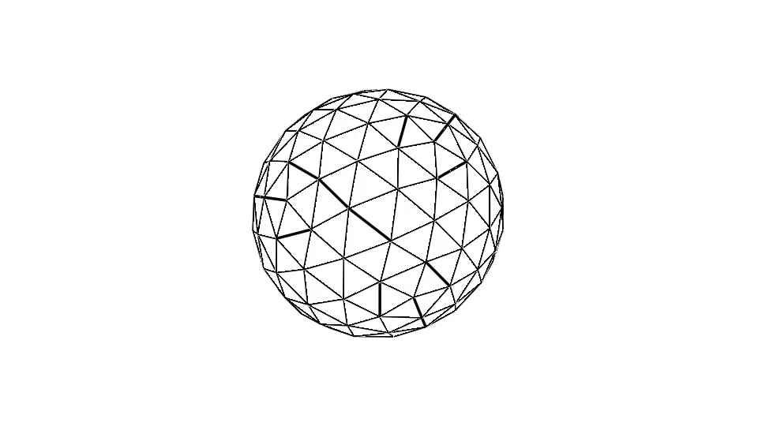

Magnetic liquid droplet in magnetic field
Here I present the research code which can be used to reproduce the results in the paper:
Erdmanis, J. & Kitenbergs, G. & Perzynski, R. & Cebers, A. (2017)
Magnetic micro-droplet in rotating field: numerical simulation and comparison with experimentusing LinearAlgebra
using GeometryTypes
using SurfaceTopology
using LaplaceBIE
using AbstractPlotting, GLMakie
# using ElTopo
########### Original code from MDrop #########
function normals(vertices,topology)
n = Point{3,Float64}[]
for v in 1:length(vertices)
s = Point(0,0,0)
for (v1,v2) in EdgeRing(v,topology)
s += cross(vertices[v1],vertices[v2])
end
normal = s ./ norm(s)
push!(n,normal)
end
return n
end
function vertexareas(points,topology)
vareas = zeros(Float64,length(points))
for face in Faces(topology)
v1,v2,v3 = face
area = norm(cross(points[v3]-points[v1],points[v2]-points[v1])) /2
vareas[v1] += area/3
vareas[v2] += area/3
vareas[v3] += area/3
end
return vareas
end
function surfacevolume(points,topology)
normal0 = [0,0,1]
s = 0
for face in Faces(topology)
y1 = points[face[1]]
y2 = points[face[2]]
y3 = points[face[3]]
normaly = cross(y2-y1,y3-y1)
normaly /= norm(normaly)
area = norm(cross(y2-y1,y3-y1))/2
areaproj = dot(normaly,normal0)*area
volume = dot(y1 + y2 + y3,normal0)/3*areaproj
s += volume
end
return s
end
function energy(points,normals,faces,psi,mup,gammap,H0)
vareas = vertexareas(points,faces)
Area = sum(vareas)
s = 0
for xkey in 1:length(points)
s += psi[xkey]*dot(H0,normals[xkey]) * vareas[xkey]
end
Es = gammap * Area
Em = 1/8/pi * (1 - mup) * s
return Es+Em
end
### Some methods for velocity calculation for a system driven by a surface force
"""
Interface velocity in a viscous liquid where regions seperated by interface do have the same viscousity. If γ is passed the curvattureless algorithm is used to take into account force due to surface tension. Returns velocity field projected on vertex normals. Usefull for equilibrium calculations.
"""
function stokesvelocity(points,normals,faces,forcen,etaP,gammap)
vareas = vertexareas(points,faces)
velocityn = zeros(Float64,length(points))
for xkey in 1:length(points)
x = points[xkey]
nx = normals[xkey]
fx = forcen[xkey]
s = 0
for ykey in 1:length(points)
if ykey==xkey
continue
end
y = points[ykey]
ny = normals[ykey]
fy = forcen[ykey]
### Need to check a missing 2
s += vareas[ykey]*1 ./8/pi/etaP* dot(y-x,nx+ny)/norm(y-x)^3*(1-3*dot(y-x,nx)*dot(y-x,ny)/norm(y-x)^2) * gammap
s += vareas[ykey]*1 ./8/pi/etaP* ( dot(nx,ny)/norm(x-y) + dot(nx,x -y)*dot(ny,x-y)/norm(x-y)^3 )*(fy - fx)
end
velocityn[xkey] = s
end
return velocityn
endGeneration of sphere mesh
include("sphere.jl")
msh = unitsphere(2)
vertices, faces = msh.vertices, msh.facesNow let's do something fun. Visualize the process with Makie in real time.
x = Node(msh)
y = lift(x->x,x)
scene = Scene(show_axis=false)
wireframe!(scene,y,linewidth = 3f0)
mesh!(scene,y, color = :white, shading = false)
display(scene)Initial parameters
H0 = [4.,0.,0.]
etap = 1.
gammap = 1.
μ = 10.
t = 0.
Δt = 0.1
N = 100
volume0 = surfacevolume(vertices,faces)
record(scene, "mdrop.gif", 1:N) do i # for i in 1:N
n = normals(vertices,faces)
psi = surfacepotential(vertices,n,faces,μ,H0)
P∇ψ = tangentderivatives(vertices,n,faces,psi)
Hn = normalderivatives(vertices,n,faces,P∇ψ,μ,H0)
E = energy(vertices,n,faces,psi,μ,gammap,H0)
rV = surfacevolume(vertices,faces)/volume0
@show E,rV
Ht = [norm(j) for j in P∇ψ]
tensorn = μ*(μ-1)/8/pi * Hn.^2 + (μ-1)/8/pi * Ht.^2
vn = stokesvelocity(vertices,n,faces,tensorn,etap,gammap)
vertices .+= n .* vn * Δt
msh = HomogenousMesh(vertices,faces)
### ElTopo stabilization
# par = SurfTrack(allow_vertex_movement=true)
# msh = stabilize(msh,par)
push!(x,msh)
AbstractPlotting.force_update!()
global vertices, faces = msh.vertices, msh.faces
global t += Δt
end